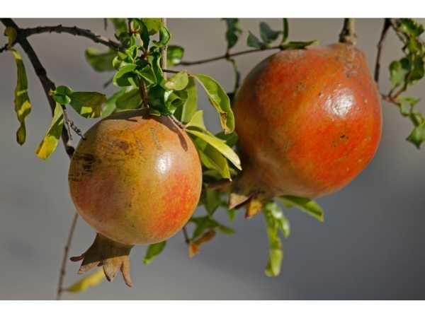

Punica granatum
Common Names: Pomegranate, Anar, Dalim, Grenadine
Local Name: Mathalam Pazham (Tamil), Anar (Hindi), Dalimba (Kannada)
Family: Lythraceae (formerly Punicaceae)
Origin: Iran and the Himalayas; cultivated for 4000+ years
Plant Type: Perennial deciduous to semi-evergreen shrub or small tree
Variety: Bhagwa, Ganesh, Ruby, Mridula are popular Indian varieties
Average Lifespan: 25–50+ years
| Growth Habit | Multi-stemmed shrub or small tree; thorny branches; dense canopy |
| Plant Size | 2–6 meters tall; canopy spread 2–4 meters |
| Leaves | Opposite or sub-opposite; oblong-lanceolate; 2–8 cm long; glossy bright green; bronze when young |
| Flowers | Bright orange-red; 3–4 cm; 5–8 crumpled petals; tubular calyx; borne singly or in clusters |
| Flower Characteristics | Two types: hermaphrodite (fruit-bearing) and male (non-fruiting); ornamental orange-red flowers |
| Fruit | Large berry (hesperidium); 6–12 cm diameter; leathery rind; hundreds of arils (seed sacs) inside |
| Fruit Color | Yellow-green to deep red skin; arils deep red to pink; juice deep ruby red |
| Seed Characteristics | 200–1400 seeds per fruit; each enclosed in juicy aril; hard or soft-seeded varieties |
| Root System | Deep taproot with fibrous laterals; very drought-tolerant |
| Climate | Subtropical to semi-arid; hot dry summers and cool winters ideal |
| Temperature Range | 10–40°C; tolerates mild frost; needs cool period for dormancy |
| Rainfall Requirement | 400–800 mm; drought-tolerant; excess rain causes fruit cracking |
| Soil Type | Well-drained sandy loam to loam; tolerates poor, rocky, and slightly saline soils |
| Soil pH Preference | 5.5–7.5 |
| Sun Requirement | Full sun (6+ hours daily) |
| Spacing | 4–5 meters between trees |
| Irrigation Method | Drip irrigation; consistent moisture during fruit development; reduce before harvest |
| Water Requirement | Low to moderate; drought-tolerant; irregular watering causes fruit cracking |
| Can it Grow in Pots? | Yes, in large pots (40–60 liters); dwarf varieties ideal for containers |
| Fertilizer Schedule | 3 times per year; pre-flowering, fruit development, post-harvest |
| Recommended Organic Fertilizers | FYM, vermicompost, neem cake, bone meal, wood ash |
| Pesticide Frequency | Monthly preventive; treat immediately if pests appear |
| Recommended Organic Pesticides | Neem oil for aphids and mealybugs; fruit bagging for fruit borer |
| Mulching Practice | Organic mulch 10–15 cm deep; keep away from trunk |
| Training System | Single or multi-stem; open center; remove suckers regularly |
| Pruning Time | During dormancy (January–February); after harvest |
| How to Prune | Remove suckers; thin crowded branches; remove dead wood; light pruning to shape |
| Common Pests | Pomegranate butterfly (Virachola isocrates), aphids, mealybugs, fruit borer |
| Common Diseases | Fruit rot (Botrytis), bacterial blight, leaf spot, heart rot |
| Disease Prevention & Remedies | Fruit bagging; copper fungicide; good air circulation; remove infected fruits promptly |
| Flowering Months | March–May (India); multiple flushes possible |
| Fruiting Season | August–November; fruits ripen 5–7 months after flowering |
| Days to Harvest | 150–180 days from flowering |
| Harvest Indicators | Metallic sound when tapped; skin color deepens; calyx lobes dry; fruit feels heavy |
| Average Yield per Plant | 30–80 fruits per tree (mature); 15–40 kg |
| Pollination Type | Self-fertile; also cross-pollinated by bees |
| Pollination Notes | Self-fertile; single tree produces fruit; bee pollination improves yield significantly |
| Pollination Details | Self-fertile; bee pollination improves fruit set; hand pollination possible |
| Propagation by Seeds | Seeds germinate in 2–4 weeks; may not come true to variety; slow to fruit (3–5 years) |
| Propagation by Cuttings | Hardwood cuttings (25–30 cm) root easily; preferred method; fruits in 2–3 years |
| Propagation by Grafting | Cleft grafting on seedling rootstock; air layering also effective |
| Water Usage | Low; one of the most drought-tolerant fruit trees; suitable for arid regions |
| Soil Conservation Practices | Grows on marginal soils; helps reclaim wasteland; deep roots prevent erosion |
| Organic Practices Used | Vermicompost, neem cake, jeevamrutha; integrated pest management |
| Companion Plants | Leguminous cover crops; marigold as pest deterrent; basil |
| Biodiversity Benefits | Flowers attract bees and butterflies; fruit feeds birds; supports orchard ecosystem |
| Commercial Production Regions | India (Maharashtra, Karnataka, Gujarat, AP), Iran, Turkey, Spain, USA |
| Market Uses | Fresh fruit, juice, health food, nutraceuticals, cosmetics |
| Processing Uses | Juice, grenadine syrup, dried arils, pomegranate molasses, health supplements |
| Market Value (Approx.) | ₹60–150 per kg; premium varieties ₹150–300; grafted plants ₹150–400 |
| Symbolism | Symbol of fertility, prosperity, and abundance in many cultures; sacred in Hinduism, Islam, and Judaism |
| Traditional Uses | Fruit rind used in Ayurveda for diarrhea; juice for heart health; bark for intestinal parasites |
| Calories | 83 kcal per 100g |
| Dietary Fiber | 4 g per 100g |
| Vitamin C | 10.2 mg per 100g |
| Vitamin A | 0 IU per 100g |
| Potassium | 236 mg per 100g |
| Antioxidants | Punicalagins, anthocyanins, ellagic acid — among the highest antioxidant content of any fruit |
| Other Key Nutrients | Folate, vitamin K, copper, phosphorus, vitamin B6 |
| Heart Health | Punicalagins lower blood pressure and LDL cholesterol; improves arterial health |
| Anti-inflammatory Properties | Powerful anti-inflammatory compounds; reduces inflammation markers |
| Immune Support | High antioxidant content supports immune function |
| Digestive Health | Fiber aids digestion; rind used for diarrhea in traditional medicine |
Disclaimer: Information provided is for educational purposes only and not a substitute for medical advice.
Add your field observations here.